Final Product
Combined Prototype
Combining different aspects of our individual Hi-Fi prototypes, we came up with our combined Hi-Fi prototype. We took parts from our individual prototypes that were either only done by one member, or we felt was better done by a certain member.

Combined Prototype
Looking back now, our initial combined prototype was still lacking in many ways, which we have since improved on.
Ensuring Usability
To best ensure the usefulness and functionality of Cooking PAPA, we carried out a final round of Usability Testing with our target users. Here are some notable findings:
- Recipe maker should allow users to input the name of the recipe first instead of taking a picture of the dish.
- Word phrasing of "Ingredients List" could be changed to "Inventory". Users thought that this was the shopping list and tried to find items there.
- Delete mood function was completely unintuitive as there were no signifiers or hints of it being available.
- Button for adding the mood could be made more obvious as users had some trouble identifying which button to press. (Took a while to realize the button)
- Shopping list search bar was not implemented when the user tried to search for an item.
- Selecting an emoji from a regular keyboard is not very intuitive.
- Sorting functions did not seem to work. Could be implemented.
- Word phrasing of "Clear List" could be changed to "Finish Shopping". Helps improve clarity.
- Users tried clicking various parts of the recipe from "Recommended Recipes" but only the image and arrow brought them to the page. Could increase clickable regions.
- It was funny that there is only tomato noodle soup and it is not a "complete recipe" as there are missing ingredients. Could make another recipe.
- Editing a recommended recipe and "save"-ing it seemed weird as users thought they would be changing the recommended recipe's base information. Word could be changed to "Confirm".
- It was troublesome to scroll all the way down to access the “generate shopping list” button.
- Word phrasing of "Cancel cooking" could be changed to "Cancel". This simplifies it and allows the button to be bigger.
- User's name should change when the edits are made.
- Better indication of skill levels should be made. Which is higher skill and lower skill.
And here are the biggest adjustments we made to our prototype as well as our justifications:
| Adjusment | Justification | Before | After |
|---|---|---|---|
| Use alternating white and grey backgrounds for each recipe in the page. | Before, the user may have slight trouble clicking on the appropriate recipe as the arrow was at the bottom right and may accidentally click to the bottom recipe. This change helps users differentiate between recipes better. | 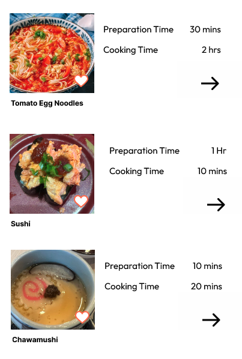 |
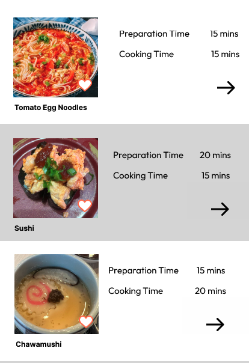 |
| On the home page, “Generate” -> “Generate Recipe” to help users see that they will generate a recipe. Redesigned the buttons to hide them and add mood as the main display. | The generate button may not be obvious that it is related to the buttons above and used to generate a recipe. Reduced the clutter by shifting the buttons to “manual input” and made the generate recipe button more obvious as to its purpose. Also made the purpose of mood more obvious in this new design. | 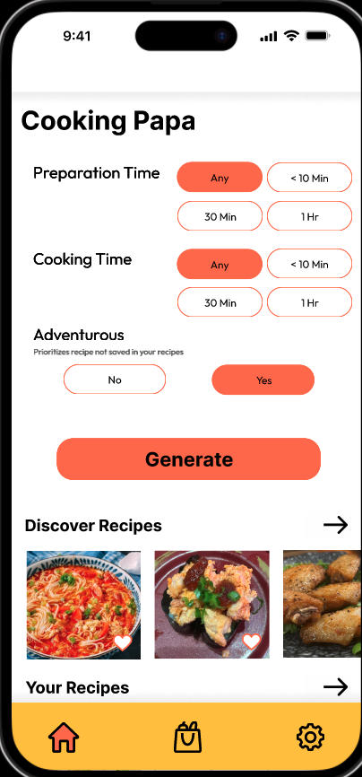 |
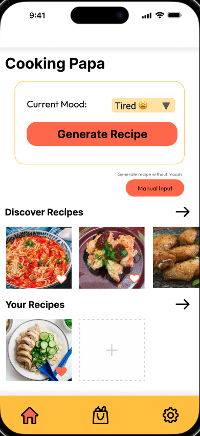 |
| Add delete button to all view mood pop ups (Bottom right corner). | Before, sliding was not intuitive as there was no indication that it could be done, which ‘locked’ the delete button for users who did not know it was possible. This change will be much clearer and easier to navigate. | 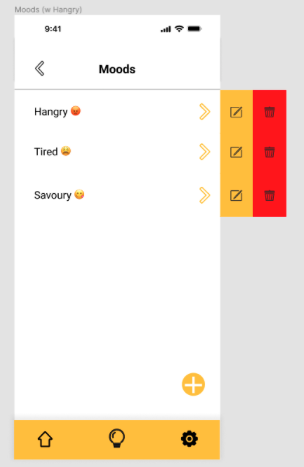 |
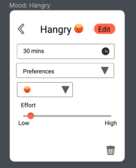 |
| Modified the cooking skill slider in the edit/add mood page. Add 0 - 100 and also beginner, intermediate and advanced. | A simple plain slider before without any rating or number may have confused the user before. This new addition of indicators would inform users and help them better understand where they stand. | 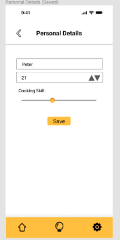 |
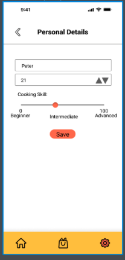 |
| Added back buttons in the recipe navigation page. | Without the back button, users would have to cancel the cooking and re-enter it, while also clicking next to the screen. This would have been frustrating as there was no easy way for users to correct their mistakes by going back one page. Hence the change was made. | 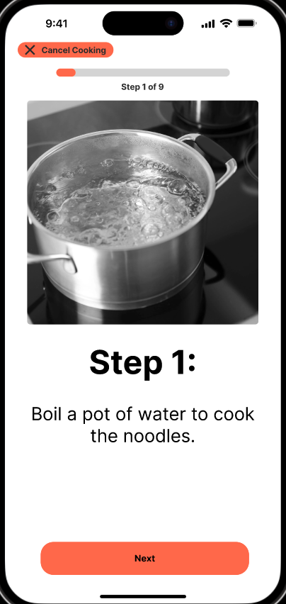 |
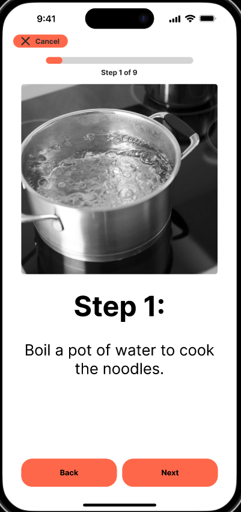 |
| “Generate shopping list” button fixed at the bottom just above the main bar. | Users would be able to see it and access it all the time, they do not have to scroll to the end of their list to see it, making it less tedious, especially if the list is long. | 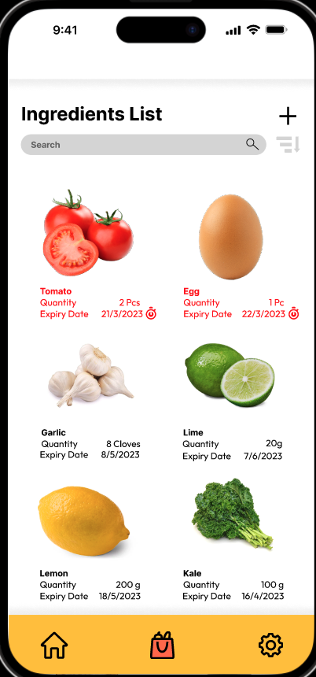 |
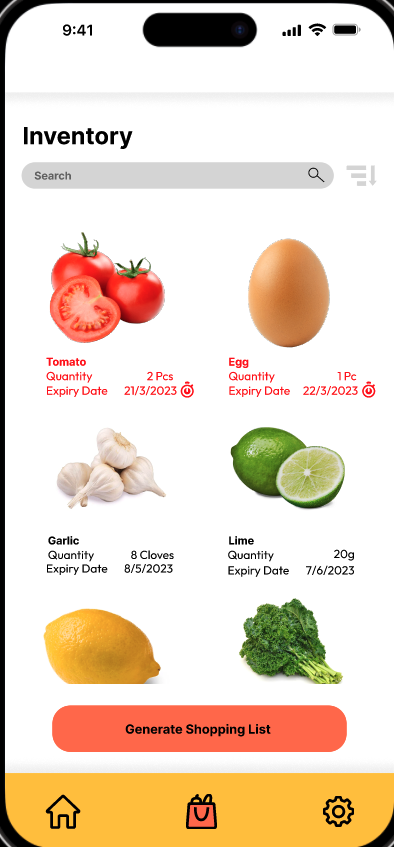 |
Final Product
After making changes as per our findings from our final Usability Testing as well as fixing prototype bugs we found on our own, here is our finalised Figma prototype for Cooking PAPA, feel free to try it out!

Final Prototype
With reference to our 3 key user tasks, here are 3 tasks for you to attempt!
- You're making a trip to the supermarket soon; generate a list of ingredients to buy.
- Create a new mood "Hangry" for your profile, and generate a list of possible meals to cook for this mood.
- Check out which of your ingredients are expiring, and cook a meal using these expiring ingredients.
We are confident that you will be able to complete these 3 tasks with ease using our finalised Cooking PAPA design.
Conclusion
Building Cooking PAPA was a blast, allowing the team to flexibly express our creativity while solving an apparent problem within the market. We really hope that Cooking PAPA brings great value to your cooking journey and would love to hear from you!
Contact us through any of our emails as displayed in The Team section.